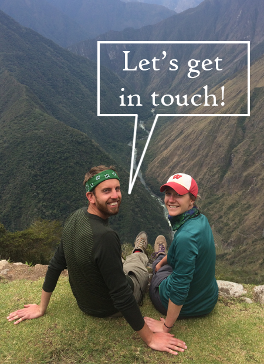

fisherjohnmark[at]gmail.com


fisherjohnmark[at]gmail.com
Fueld by my desire to travel and learn more about the world, countless teenage hours were spent panning around Google Earth, planting the seed for what would ultimately become my interest in GIS and data. Now, my goal is to create applications and maps that tell informative stories. Not only do I hope my global curiosity never falters, but that I pass it on to others through my work.
I am a Wisconsin native living in Washington, DC.
SQL | Python | Java | JavaScript | HTML | CSS | DBMSs | ArcGIS | Illustrator | Photoshop
U.S. Census Bureau
Geographer | August 2016 - Present
Statistician | September 2015 - August 2016
University of Wisconsin - Madison
M.S. | GIS & Cartography | 2016 - 2018 (Anticipated)
B.S. | Geography & Math Certificate | 2007 - 2011
Shaded relief map of a proposed cycling race route in Chile. Created using ArcMap and Adobe Photoshop and Illustrator.
Interactive web application allowing users to obtain safe yet efficient cycling routes within Duluth, MN. Developed using Java, JavaScript, PostgreSQL / PostGIS, GoogleMaps API, and pgRouting.
Mapbox Studio tileset inspired by Antoine de Saint-Exupéry's The Little Prince.
fisherjohnmark[at]gmail.com
fisherjohnmark[at]gmail.com